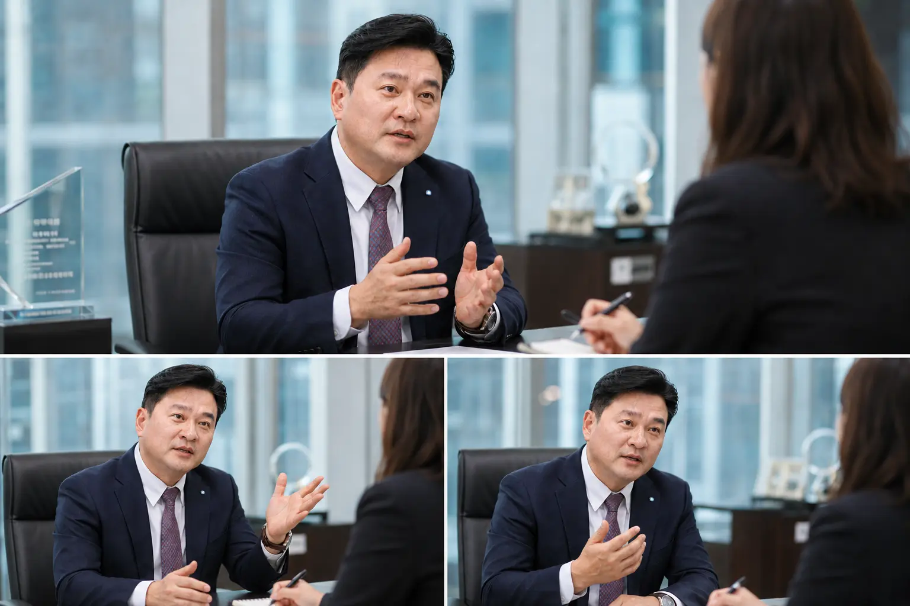

(주)씨유레저는 2009년 (주)채움지앤엘을 시작으로 2019년 (주)씨유레저로 상호를 변경하며 회원권 분양·마케팅 전문 회사로 거듭났다. 초기 회사 설립부터 국내 레저 마케팅 분야 최고를 목표하며 전문가들로 구성해 탄탄한 시작을 했고, 참신한 기획과 실행력으로 수많은 프로젝트를 성공적으로 이끌며 이 분야 최고의 자리에 올랐다.
일회성 프로젝트만을 위한 조직이 아니라, 레저 프로젝트 전 과정에 대한 이해와 연구를 바탕으로 업계의 선두주자로 자리매김한 (주)씨유레저는 공식적으로 수집된 25만 건 이상의 고객 데이터와 정확한 시장 평가를 바탕으로 최적의 솔루션을 제공한다. 특히 평균 경력 18년 이상의 전문인들로 구성된 이 분야 최고의 전문 기업으로 꼽힌다.
(주)씨유레저는 2022년 더시에나 골프&리조트 회원모집을 성황리에 마쳤으며, 2020년 라카이 샌드파인 회원모집, 2018년 스탠포드 호텔&리조트 통영 회원모집, 2015년 콘래드 서울호텔 피트니스 클럽 회원모집 등 13년에 걸쳐 굵직한 프로젝트를 성공적으로 진행해왔다.
이 같은 성공에는 시장의 변화와 고객의 성향을 각 상품에 정확히 반영해온 점이 있다는 게 ㈜씨유레저 측의 설명이다. 우리나라 레저 문화 변화의 중심에서 시장을 이끌고 있는 ㈜씨유레저의 노하우와 경영 마인드를, 채수용 대표에게 직접 들었다.

씨유레저 주요 프로젝트 연혁
2009년 함양스카이뷰부터 2022년 더시에나까지, 13년간 진행한 주요 프로젝트
- 2022더시에나 골프&리조트 회원모집 성공
- 2020라카이 샌드파인 회원모집 · 포도CC 이용권 판매
- 2019사명 변경 ((주)채움지앤엘 → (주)씨유레저) · 아리스타CC 이용권 판매
- 2018스탠포드 호텔&리조트 통영 회원모집
- 2017해운대비치 골프앤리조트, 오션비치 골프앤리조트 회원모집
- 2016워커힐 비스타 호텔 피트니스 클럽 회원모집
- 2015콘래드 서울호텔 피트니스 클럽 회원모집
- 2014거제뷰 골프앤리조트, 퍼시픽블루 골프앤리조트(일본) 회원모집
- 2013진주CC 주중회원모집
- 2012함양스카이뷰 대중제 전환 업무 · 실크리버CC(현 세레니티CC) 회원모집
- 2011롯데리조트(부여·속초·아트빌라스) 분양대행
- 2009회사 창립 · 가산노블리제CC(현 푸른솔GC) 주중회원모집 · 함양스카이뷰 회원모집
레저 산업의 미래, 어떻게 보십니까
Q.레저 산업의 미래 전망, 가치, 가능성 등에 대한 대표님 의견 부탁드립니다.
레저 산업이 성장할 것이라는 데에는 이견이 없지만, 양적 팽창보다는 다양한 경험과 보다 높은 서비스가 이뤄지는 질적 성장으로 이루어질 것이라 봅니다.
대명리조트, 용평리조트 등의 대형 레저 법인이 이끄는 중저가 체인형 리조트 시장은 신규 개발이 축소되고 있습니다.
미국 라스베이거스처럼 아무 기반 시설이 없는 영종도에서 단지 내 자체 시설만으로 승부해 성공한 파라다이스 시티가 있고, 시내 중심에 있는 호텔에서 즐기는 호캉스는 하나의 트렌드가 된 지 오래입니다.
아만, 호시아노 등 외국의 프리미엄 리조트는 소규모의 객실 구성이지만 명확하고 개성 있는 특색으로 시장에 어필하며 주목받고 있습니다. 리조트의 콘셉트에 힐링, 요가, 명상, 북카페, 뮤직라이브러리 같은 다소 소소해 보이는 키워드들이 메인으로 등장하고 있습니다.
힐튼 글로벌에서 발간한 'The 2023 Traveler' 리포트에는 문화상품, 공연행사, 교육 프로그램 또는 웰빙 루틴, 케어 등 개인화된 경험과 활동을 추구하며, 여행객의 56%가 여행을 쉽게 만드는 솔루션을 원한다고 보고하고 있습니다.
멀지 않은 미래에 특정 고객층을 타깃으로 다양한 경험을 제공하는 중소 규모의 시설이 다양하게 발생할 것이라 생각합니다.
씨유레저의 철학과 일하는 방식
Q.(주)씨유레저의 기업 이념과 대표님의 사업 마인드가 궁금합니다.
(주)씨유레저는 단순히 만들어 놓은 상품을 판매만 하는 일반적 판매대리점의 기능이 아닙니다. 시행 사업자의 재무 상황과 회원 모집 목적에 맞는 상품을 제안해 마케팅을 실행하고, 이후 시설의 운영과 회원 간의 마찰이 없도록 하며, 회원 모집 후에도 A/S를 진행해 장기적으로 함께 호흡할 수 있는 시장 내 동반자가 되고자 합니다.
때문에 대부분의 사업지에서 인허가 단계부터 프로젝트에 참여해 사업 진행의 윤활유 역할을 수행하고 있습니다.
고객들로부터 분양하고 외면하는 세일즈맨, 대행사가 아니라 시행 사업자와 고객 사이에서 정기적으로 호흡하며 양주체의 이익과 원활한 커뮤니케이션을 위해 서포트하는 것. 그것이 레저 시장 내에서 생존할 수 있는 방향성이며 역할이라 생각합니다.
또한 플랫폼 개발을 통해 새로운 레저 시장을 창출하는 것이 최종 목표입니다.
Q.(주)씨유레저의 분양 마케팅 성공 사례가 궁금합니다.
(주)씨유레저의 성공 사례는 회원권의 판매 금액을 낮게 책정하기보다는 오히려 높게 하고, 이용 횟수를 늘리기보다는 이용 방법을 바꾸는 방식의 창의적인 접근과 해석으로 상품을 개발했던 '특별한 기획'에서 출발했습니다.
광고에 의존하는 물량 홍보보다는 스토리로 설득할 수 있는 1:1 대면 홍보 마케팅에 초점을 맞추고 있습니다. 철저한 시장 분석을 통해 시장의 니즈에 적합한 상품과 사업지의 타깃을 명확화해 세일즈하는 전략, 즉 니즈 오리엔티드(needs-oriented) 마케팅을 한다는 점이 타 대행사와의 구분점이라 할 수 있을 것 같습니다.
시행 사업자와 고객 사이에서 정기적으로 호흡하는 것.
그것이 레저 시장에서 생존할 수 있는 방향성입니다. 채수용 (주)씨유레저 대표이사
Q.분양 마케팅을 할 때 중점을 두는 부분은 무엇입니까?
철저한 시장 분석과 타깃 세분화가 핵심입니다. 고객의 지역, 이용 빈도, 가용 금액 등을 기준으로 맞춤형 홍보물과 마케팅 전략을 구사합니다.
예를 들어 제주도민과 서울 고객의 니즈는 전혀 다르기에, 동일 상품이라도 구성과 가격을 달리 설정합니다. 대중을 위한 보편적 상품이 아니라, 특정 타깃에 최적화된 상품을 설계하고 1:1로 제안하는 방식이 가장 효과적입니다.
| 구분 | 일반 분양대행 | 씨유레저 |
|---|---|---|
| 역할 | 완성된 상품의 판매 대행 | 기획부터 운영, A/S까지 동반 |
| 참여 시점 | 분양 개시 단계 | 인허가 단계부터 |
| 마케팅 방식 | 광고 중심 물량 홍보 | 스토리로 설득하는 1:1 대면 마케팅 |
| 시장 접근 | 대중을 위한 보편 상품 | 타깃 세분화 (지역·빈도·예산) |
| 관계 지속 | 분양 완료 시 종료 | 분양 이후 회원 관리·A/S |
Q.고객과 파트너사의 이익을 위해 어떤 점을 중요하게 생각하십니까?
사업의 안정성이 가장 중요합니다. 단순히 분양을 하는 것이 아니라, 이후 리스크를 최소화하는 회원 관리 시스템과 수익 구조를 함께 설계해야 합니다.
회원권이 잘 팔려도 운영 수익이 낮으면 시행사와 고객 모두 위험해지기 때문입니다. 저희는 이러한 균형점을 찾아 시장 민감도를 반영한 기획을 통해 안정적이고 지속 가능한 사업을 만들어 갑니다.
지금의 시장, 그리고 회원권의 미래
Q.현재 회원권 분양 시장의 동향은 어떻습니까?
코로나 시기 잠시 반등했던 시장은 다시 경색되고 있습니다. 버블의 여파로 분양과 시행 모두 어려움을 겪고 있는 상황입니다.
하지만 위기일수록 차별화된 기획과 세분화된 타깃 전략이 중요합니다. 이제는 단순한 가격 경쟁보다는 고부가가치, 희소성을 가진 상품이 수요자의 선택을 받게 될 것입니다.
Q.앞으로 회원권 시장의 가능성과 유용성은 어떻게 보십니까?
신규 회원제 골프장의 유입이 어려운 만큼, 입지 좋은 상위 골프장의 회원권은 더욱 안정적인 자산으로 남을 것입니다.
대형 체인보다는 사업지의 특성과 회원권 콘셉트가 잘 어우러진 단위 프로젝트가 주목받을 것으로 보입니다. 기획력과 시장 이해도를 갖춘 상품이라면 새로운 시장도 충분히 개척 가능하다고 봅니다.
더시에나, 성공의 진짜 이유
Q.최근 성공적으로 분양된 더시에나 리조트의 성공 요인은 무엇인가요?
더시에나는 국내 리조트 중 가장 성공적인 하이엔드 브랜드로 평가받고 있습니다. 성공의 핵심은 시행사 회장단의 하이엔드 시장에 대한 이해와 빠른 실행력, 그리고 씨유레저와 파트너사의 유기적 협력에 있습니다.
전용면적별로 나눠 팔려던 기존 계획을 통합형 상품으로 변경하고, 기명·무기명 선택권을 부여해 고객 만족도를 높였습니다.
특히 서울 청담에 마련한 5층 규모의 회원 전용 라운지는 회원 가치를 극대화했습니다. 희소성과 감동을 모두 담은 이 기획이 시에나의 성공 요인입니다.
위기에서 출발한 회사, "마이다스의 손"
Q.사업을 하며 겪은 어려움과 극복 방법은 무엇입니까?
2009년 금융위기 속에서 회사를 설립한 만큼, 처음부터 어려움 속에서 출발했습니다.
하지만 어려움에 매몰되지 않고, 직접 현장에서 발로 뛰며 솔루션을 찾아 나갔습니다. 판매보다 기획에 중심을 두었기에 시장 상황 속에서도 문제 해결이 가능했습니다.
판매보다 기획에 중심을 두었기에
시장 상황 속에서도 문제 해결이 가능했습니다.
Q.'분양업계의 마이다스의 손'이라는 별칭에 대해 어떻게 생각하십니까?
부담스러운 표현이지만, 기획 중심의 사고와 행동이 결과로 이어졌다고 생각합니다.
단순 판매 대행에 그치지 않고 시행사와의 커뮤니케이션, 고객 중심의 전략, 장기적인 관계 형성. 이러한 부분들이 이런 수식어로 이어졌다고 봅니다.
일회성을 넘어, 동반자로
Q.향후 계획은 무엇입니까?
회원 모집은 비교적 일회성으로 휘발될 수 있는 사업 구조를 가지고 있습니다.
(주)씨유레저는 지난 20년간 수많은 고객들과 관계를 유지해 오고 있으며, 시행사의 니즈, 사업지의 운영, 관리, 마케팅 등 여러 분야를 직·간접적으로 체험하며 배웠습니다.
저희는 사업 주체와 고객을 긴밀하고 지속적으로 연결시켜 주는 매체를 찾고 있습니다. 그 매체가 플랫폼의 형식이 될 수도 있고, 직접 시행하여 구축하는 새로운 사업 구조가 될 수도 있으며, 맥을 같이하는 사업 주체의 파트너가 될 수도 있을 듯합니다.
현재의 역할을 강화하고 지속적으로 상호 연계성을 가질 수 있는 사업 모델을 개발하고 발굴하기 위해 노력 중입니다.
씨유레저에 대해 자주 받는 질문을 정리했습니다.
Q.씨유레저는 어떤 회사인가요?
2009년 (주)채움지앤엘을 시작으로 2019년 (주)씨유레저로 상호를 변경한 회원권 분양·마케팅 전문 기업입니다. 평균 경력 18년 이상의 전문가로 구성되어 있으며, 25만 건 이상의 고객 데이터를 보유하고 있습니다.
Q.씨유레저가 일반 분양대행과 다른 점은 무엇인가요?
단순 판매 대행이 아니라 인허가 단계부터 사업에 참여해 시장 분석, 상품 설계, 1:1 대면 마케팅, 분양 이후 A/S까지 전 과정을 함께합니다. 시행 사업자와 고객 사이에서 정기적으로 호흡하는 '윤활유 역할'을 지향합니다.
Q.씨유레저가 진행한 대표 프로젝트는 무엇인가요?
더시에나 골프&리조트, 롯데리조트(부여·속초·아트빌라스), 콘래드 서울, 비스타 워커힐, 라카이 샌드파인, 해운대비치, 오션비치, 거제뷰, 진주CC, 가산노블리제CC, 함양스카이뷰, 스탠포드 호텔&리조트 통영 등 2009년 이후 12개 이상의 주요 프로젝트를 진행했습니다.
Q.현재 회원권 분양 시장은 어떤 상황인가요?
코로나 특수 이후 시장이 다시 경색되며 분양과 시행 모두 어려움을 겪고 있습니다. 그러나 위기일수록 차별화된 기획과 세분화된 타깃 전략이 결정적입니다. 단순한 가격 경쟁이 아닌 고부가가치·희소성 상품이 수요자의 선택을 받게 됩니다.